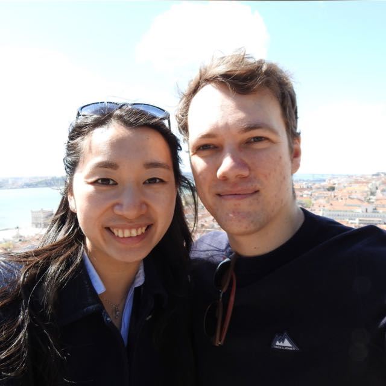
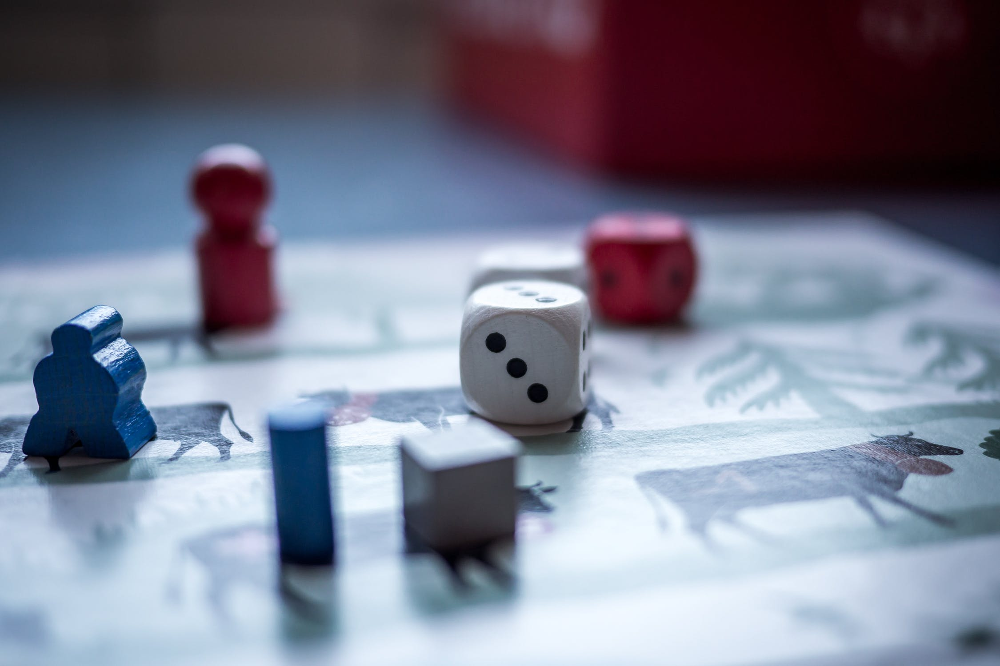

Wie ben ikIk ben Jesse, 27 jaar en ik woon met mijn vriendin in Groningen.

Een aantal feitjes:
- Ik heb 3 jaar in Schotland gewoond en 7 jaar in Ghana
- 3 keer per week ga ik naar de sportschool
- Naast school werk ik ook nog als magazijmedewerker bij Toolmax en schrijf ik productbeschrijvingen voor 050 Media
- Ook houd ik van bordspellen, videospellen en Dungeons and Dragons
Hobbies en interesses
Fitness

Nadat ik met mijn laatste studie gestopt was en full time ben gaan werken ben ik ook erg fanatiek aan het sporten gegaan. Vroeger kookte ik bijna nooit en bestond mijn dieet voornamelijk uit Subway en pizza's. Omdat ik toen niet lekker in mijn vel zat en maar 67 kg woog heb ik besloten om zo fit mogelijk te worden. Zo ben ik ongeveer 3 jaar lang 4-6 keer per week naar de sportschool gegaan. Tegenwoordig kook ik (of mijn vriendin) elke dag en ben ik een stuk gezonder
Bordspellen
Ik houd er van om bordspellen te spelen. Voornamelijk spellen die wat diepgaander zijn. Mijn favoriete bordspel heet "Betrayal at house on the hill" en is een co-operatief spel waar je met een groepje een spookhuis gaat doorzoeken wat elke keer weer anders is. Helaas bevat het vrij veel leeswerk waardoor het niet vaak uit de kast wordt getrokken. Op mijn verjaardag vraag ik meestal om een leuk nieuw bordspel. We proberen regelmatig een game avond bij ons thuis te organiseren met vrienden.
D&D
Niet echt een bordspel maar meer een role playing game. Eén keer per maand spreek ik af met een groepje vrienden en spelen we een sessie van onze Dungeons and dragons campaign die al meer dan een jaar duurt. Helaas ik het de laatste tijd afgelast in verband met Corona.